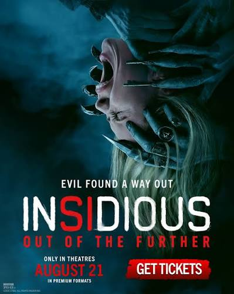

Insidious is a supernatural horror film that follows a family who discovers that their son is trapped in a mysterious world known as The Further.
↓
Supernatural, Mystery, and Thriller.
Insidious follows a family whose son becomes trapped in a mysterious realm known as The Further.
The family must discover the truth behind the supernatural events and find a way to bring him back.